You can also download a PDF copy of this lecture.
Often probabilities concerning a discrete random variables can be computed from its probability distribution using summation.
Example: Consider the probability distribution of the mean distance (i.e., \(\bar{x}\)) from a sample of \(n\) = 3 throws of the trebuchet (a sampling distribution).| \(\bar{x}\) | \(P(\bar{x})\) |
|---|---|
| 1.00 | 0.001 |
| 1.33 | 0.009 |
| 1.67 | 0.045 |
| 2.00 | 0.135 |
| 2.33 | 0.270 |
| 2.67 | 0.324 |
| 3.00 | 0.216 |
What are the probabilities of the following events?
Note that we simply sum the probabilities of the values of the variable for which the event is true.
Example: The figure below shows the sampling distribution of \(\bar{x}\) based on a sample of \(n\) = 10 observations of the throwing distance of the trebuchet. 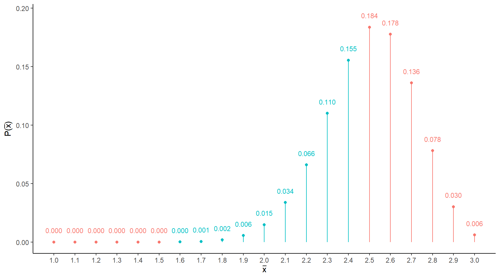 What is the probability that \(\bar{x}\) is greater than 1.5 and less than 2.5 meters?
Continuous random variables require a different mathematical treatment. Note that we cannot simply list the possible values of a continuous random variable and their probabilities.
The probability distribution of a continuous random variable is typically represented by a function, which we will usually consider graphically. This function relates the value of the random variable to its probability density.
Example: Consider the following hypothetical probability distributions of reaction time. 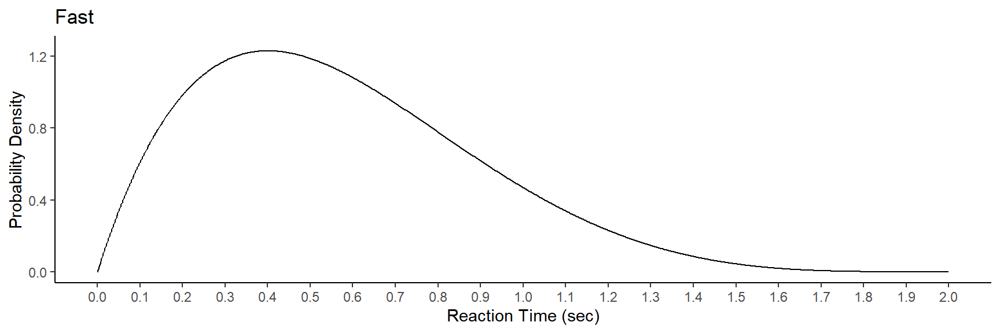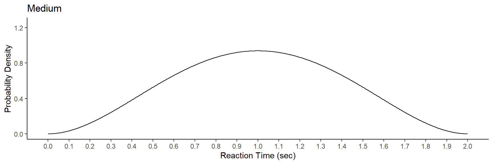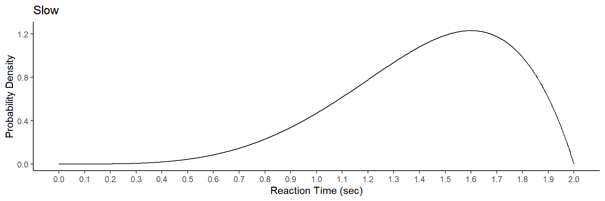
The distribution is represented by a function \(f(x)\) which gives the probability density of \(x\). It has three properties:
Probability density is non-negative so that \(f(x) \ge 0\).
The area under \(f(x)\) and above zero always equals one.
The area under \(f(x)\) and between \(a\) and \(b\) equals \(P(a < x < b)\).
Example: What is the probability that reaction time is between 0.5 and 1.0 seconds — i.e., \(P(0.5 < X < 1)\)?
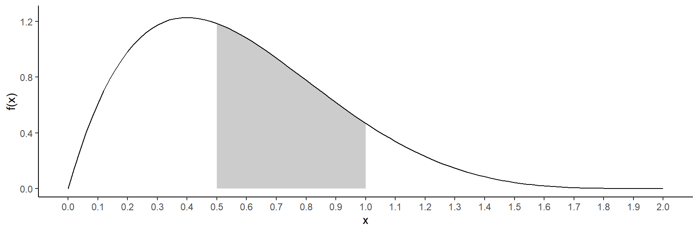
Example: What is the probability that reaction time is less than 0.5 seconds — i.e., \(P(X < 0.5)\)?
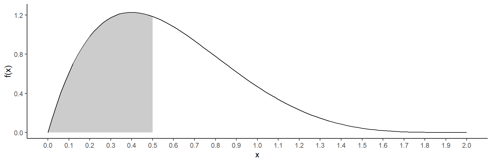
Example: What is the probability that reaction time is greater than 1.0 seconds — i.e., \(P(X > 1)\)?
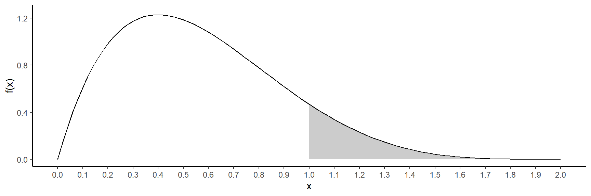
Example: What is the probability that reaction time equals 1.0 seconds — i.e., \(P(X = 1)\)?
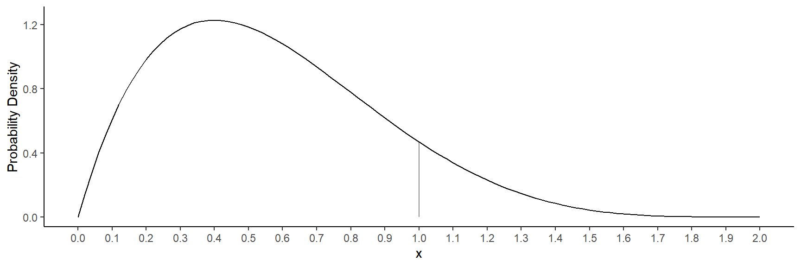
Example: Suppose reaction time had the following probability distribution.
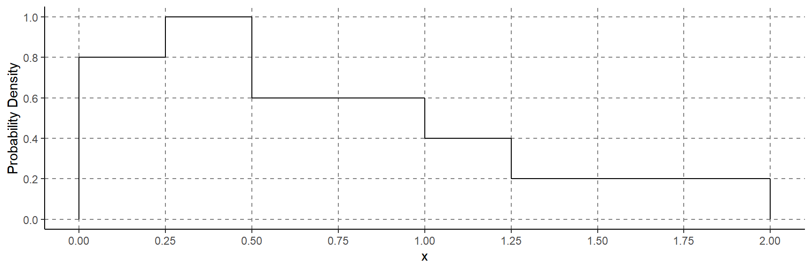
The following probabilities are relatively easy to confirm.
\(P(X < 0.5) = 0.45\).
\(P(X > 0.5) = 0.55\).
\(P(0.25 < X < 0.5) = 0.25\).
\(P(0.5 < X < 1.0) = 0.3\).
\(P(X < 1) = 0.75\) (which shows that \(Q_3 = 1\)).
Example: Consider the following probability distribution of a continuous random variable \(x\). 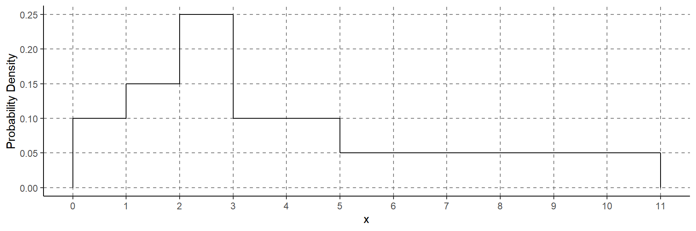 The three quartiles have the property that \[\begin{align} P(X < Q_1) & = 0.25, \\ P(X < Q_2) & = 0.5, \\ P(X < Q_3) & = 0.75. \end{align}\] What are the quartiles? Hint: They are whole numbers for this distribution.
The mean (\(\mu\)) of continuous random variable cannot (usually) be defined or computed without calculus, but it is the “balance point” of its probability distribution.
The standard deviation (\(\sigma\)) of a continuous random variable cannot (usually) be defined or computed without calculus, but it measures the “spread” of the probability distribution.
Example: Consider computing the probability \(P(0.2 < X < 0.7)\).
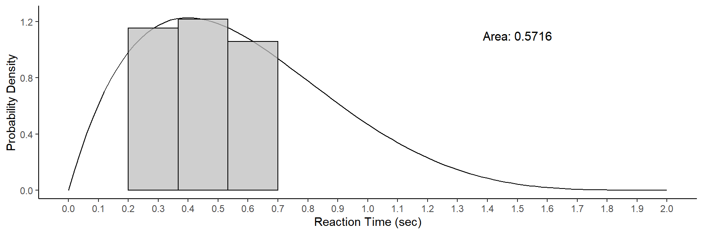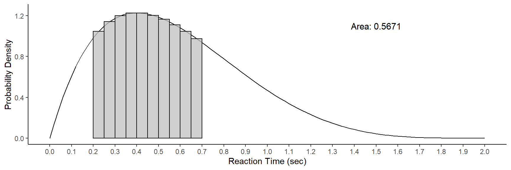
The actual probability is about 0.5667.
One important family of continuous probability distributions is the normal distribution.
Example: Normal probability distribution with mean \(\mu\) = 100 and standard deviation \(\sigma\) = 10. 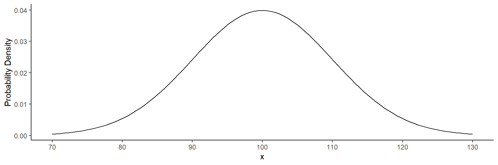
Procedure for computing probabilities from a normal probability distribution.
Convert variable value(s) to \(z\)-score(s) using the formula \[
z = \frac{x - \mu}{\sigma},
\]
where \(\mu\) and \(\sigma\) are the mean and standard deviation of the distribution, respectively.
Use software such as statdistributions.com to compute the probability based on the \(z\)-score(s). Such tools usually use the fact that for any normal distribution, the distribution of the \(z\)-score has a standard normal distribution, which has as mean of zero and a standard deviation of one.
Example: Assume a normal probability distribution with mean \(\mu\) = 100 and standard deviation \(\sigma\) = 10. Confirm the following probabilities.